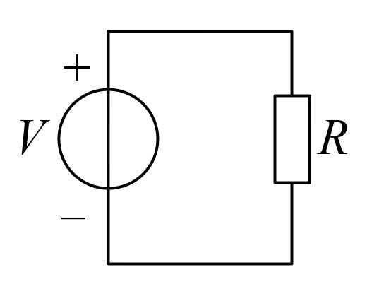

Simple resistive circuit — adjust voltage \(U\) and resistance \(R\) to see current \(I\) and power \(P\) update instantly
Linear step: 10–100 Ω, step size 1 Ω

A straight line through the origin with slope = \(1/R\). When resistance is fixed, current is proportional to voltage.
\(P = U^2/R\), an inverse hyperbola. Smaller resistance yields greater power.
Ohm's Law: \(U = IR\), current is proportional to voltage and inversely proportional to resistance.
Joule's Law: \(P = UI = I^2R = U^2/R\), power is proportional to the square of current.
The U-I curve is a straight line through the origin with slope \(1/R\); the P-R curve is a hyperbola \(U^2/R\).
• Current: If \(I < 0.1\) A, displayed as mA (×1000); otherwise displayed as A.
• Power: If \(P < 0.1\) W, displayed as mW (×1000); otherwise displayed as W.
• Resistance: Auto-converts between Ω / kΩ (1 kΩ = 1000 Ω).
• Note: High voltage and low resistance produce high current and high power.